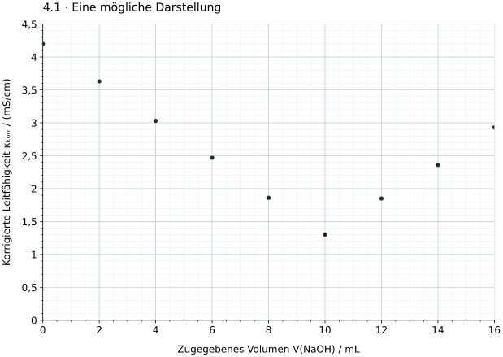

Eine Wertetabelle wird zum Diagramm
Die folgenden Daten beschreiben modellhaft eine Säure-Base-Titration mit Natronlauge bei gleichbleibender Temperatur. Die Leitfähigkeiten sind bereits volumenkorrigiert. Eine weitere Korrektur ist nicht nötig.
| V(NaOH) / mL | κkorr / (mS/cm) |
|---|---|
| 0,0 | 4,20 |
| 2,0 | 3,63 |
| 4,0 | 3,03 |
| 6,0 | 2,47 |
| 8,0 | 1,86 |
| 10,0 | 1,30 |
| 12,0 | 1,85 |
| 14,0 | 2,36 |
| 16,0 | 2,93 |
Arbeitsblatt mit Wertetabelle und leerem Raster öffnen · Achsenraster als SVG herunterladen

Deine Aufgabe
- Zeichne ein Diagramm, das alle Werte sinnvoll abbildet. Wähle selbst eine gleichmäßige Skalierung und beschrifte beide Achsen mit Messgröße und Einheit.
- Trage die Daten als gut erkennbare Punkte oder kleine Kreuze ein. Gib dem Diagramm eine aussagekräftige Überschrift.
- Beschreibe den erkennbaren Verlauf in zwei Sätzen. Ein Äquivalenzvolumen musst du hier noch nicht bestimmen.
Hilfe 1: Welche Größe gehört auf welche Achse?
Das zugegebene Volumen ist die unabhängige Größe. Die korrigierte Leitfähigkeit wird diesem Volumen zugeordnet. Prüfe jeweils den kleinsten und größten Tabellenwert, bevor du den Maßstab festlegst.
Hilfe 2: Einen nutzbaren Maßstab finden
Eine mögliche Wahl ist eine waagerechte Achse von 0 bis 16 mL und eine senkrechte Achse von 0 bis 4,5 mS/cm. Nutze den verfügbaren Platz. Gleiche Zahlenabstände müssen auf derselben Achse gleich große Strecken erhalten; beide Achsen dürfen unterschiedliche Maßstäbe haben.
Musterlösung: Diagramm und Beschreibung

Die korrigierte Leitfähigkeit nimmt zunächst annähernd linear ab. Nach dem Bereich um 10 mL steigt sie annähernd linear wieder an.
Ein Punktdiagramm genügt. Falls du den Verlauf zusätzlich nachzeichnest, darf die Linie die Lage der Daten verdeutlichen; ein Zickzackzug von Punkt zu Punkt ist keine Ausgleichsgerade. Für die spätere Auswertung werden geeignete Abschnitte getrennt betrachtet.
Selbstkontrolle
Sind beide Messgrößen und Einheiten angegeben? Ist jeder Maßstab gleichmäßig? Sind alle neun Punkte richtig eingetragen und gut erkennbar? Bleibt der Unterschied zwischen Datenpunkten und einer ergänzten Linie klar?
Fachliche Quellen und Modellgrenzen
- IUPAC (2019): Terminology of electrochemical methods of analysis, Abschnitt 6.7.1: konduktometrische Auswertung über den Schnittpunkt linearer Kurvenabschnitte.
Aufgabe, Zahlenwerte, Raster und Grafik sind eigenständig für dieses Lernangebot erstellt. Die Daten sind didaktische Modellwerte bei konstanter Temperatur; sie stammen nicht aus einem Versuch. Das Diagramm zeigt korrigierte Leitfähigkeit, nicht Leitwert.